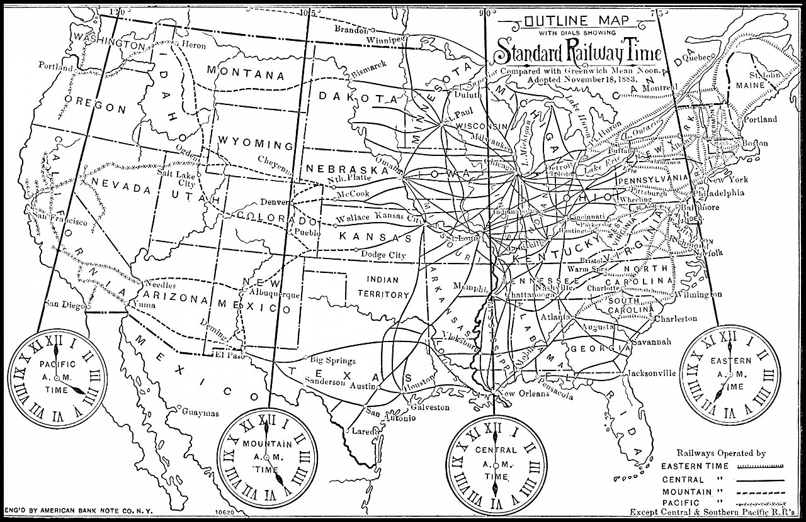

In parts of North America, noon came twice on 18 November 1883. A railway clock in those places reached noon by its own reckoning. Then, when noon in the new standard time arrived, the clock was reset to it, and it showed noon again.
The plan behind the reset came from William F. Allen, the editor of a railway timetable guide. Until that day, each railway had kept its own time, and the clocks did not agree. When separate systems work together, small differences in their rules become a shared problem. For the railways it was a safety problem. Software built by an agent can end up with the same kind of differences inside it.
Every railway on its own clock
Until 1883, each US railway chose its own time standard. Between Chicago and Pittsburgh the usual choice was Columbus time, even on lines that did not run through Columbus. The Northern Pacific went the other way and had seven time zones between St Paul and the western end of its line.
Each choice made sense to the railway that made it. One time along one line gave its own crews a timetable they could follow. The trouble came where one railway’s trains met another’s, each working to a different clock. The Library of Congress says the difference “could lead to wrecks and many deaths,” and that the confusion became more dangerous as routes and traffic grew.
One rule, agreed by all
Allen was the editor of the Traveler’s Official Railway Guide. His plan, as the Library of Congress describes it, had five zones: Intercolonial, Eastern, Central, Mountain and Pacific. Within a zone, every railway kept the same time. The Library credits the change with making the movement of people and goods safer.
The first zone did not last long. The Intercolonial Railway declined Intercolonial Time and adopted Eastern Time, so the railways started with four.


The same job, done two ways
An agent writing software meets this problem in a smaller form. In one session you ask it to show prices in the shopping basket. In another you ask it to show prices on an invoice. Unless it is told otherwise, it may write two pieces of code that add tax in slightly different ways, and each will look right on its own screen.
Take three items at 2.90 each, with 15 per cent tax. With tax, each costs 3.335. The basket rounds each line to the cent, giving 3.34, and adds the three lines: 10.02. The invoice adds first, 8.70 × 1.15 = 10.005, and rounds the total: 10.01. Both round halves up. Same items, same tax rate, same rounding rule, and the customer is shown two totals one cent apart. Each piece of code is correct by its own method.
The same happens with dates, time zones, user names, how a missing value is shown, and what counts as a valid email address. Two ways to do the same job start out matching. Then one is fixed and the other is not, or one gains a new case and the other does not, and they drift apart.
The railways’ remedy works here too. Ask your agent to list every place your software rounds money, formats a date or checks an email address. Where it finds two rules for one job, pick one and make every screen use it. Writing that rule where the agent will read it next time, as an earlier post covered, keeps the next screen on the same rule.
The objection
Before 1883 many towns set their clocks by the sun at their own longitude, and standard time replaced that with one clock for a whole zone. Some places objected. In November 1883 the Indianapolis Sentinel complained that people “must eat, sleep and work as well as travel by railroad time,” and went further: “People will have to marry by railroad time, and die by railroad time.”
It was an objection to a change of habit. People went on marrying and dying as before, now by a clock that agreed with every train in their zone, and in 1918 federal law adopted standard time.
The second rounding rule in your software is the same kind of habit. It felt right to whoever wrote it, but nothing is lost when it goes. The customer just stops seeing two totals.